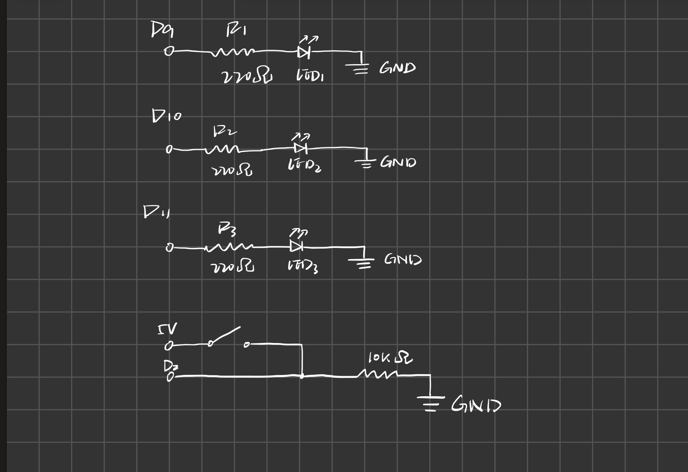
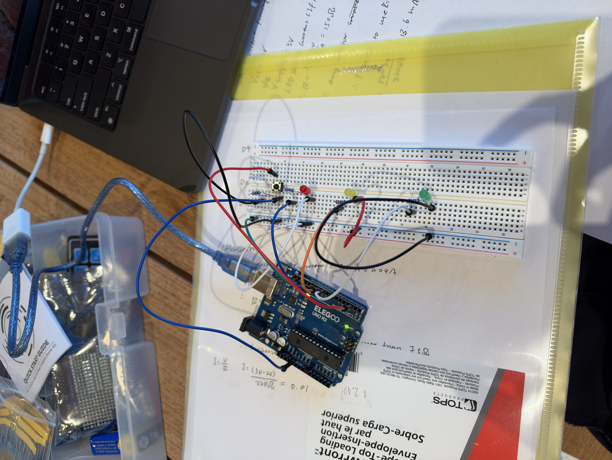

For this assignment, I created an interactive light-up toy using an Arduino UNO, three LEDs, and a pushbutton. When the button is pressed, the LEDs fade in one by one and then fade out together.

The schematic shows three LEDs connected to PWM pins D9, D10, and D11, each with a 220Ω current-limiting resistor. A pushbutton is connected to 5V and D2, with an external 10kΩ pull-down resistor connecting D2 to GND.
My code uses digitalRead() to detect the button state, analogWrite() to control LED brightness, and digitalWrite() to turn the LEDs off. I also used for loops to make the three LEDs fade in sequentially and then fade out together.
// Define the digital input pin for the button.
const int buttonPin = 2;
// Store the PWM pins connected to the three LEDs.
const int ledPins[] = {9, 10, 11};
// Define the total number of LEDs.
const int numLeds = 3;
// Run setup once when the Arduino starts.
void setup() {
// Set the button pin as input using an external pull-down resistor.
pinMode(buttonPin, INPUT);
// Loop through all LED pins.
for (int i = 0; i < numLeds; i++) {
// Configure each LED pin as an output.
pinMode(ledPins[i], OUTPUT);
}
}
// Repeat the light interaction continuously.
void loop() {
// Read the current button state.
int buttonState = digitalRead(buttonPin);
// Start the animation when the button is pressed (HIGH).
if (buttonState == HIGH) {
// Fade in the LEDs one by one.
for (int i = 0; i < numLeds; i++) {
// Gradually increase the brightness from 0 to 255.
for (int brightness = 0; brightness <= 255; brightness += 5) {
// Set the brightness of the current LED using PWM.
analogWrite(ledPins[i], brightness);
// Wait 10 milliseconds to make the fade visible.
delay(10);
}
}
// Gradually fade out all LEDs together.
for (int brightness = 255; brightness >= 0; brightness -= 5) {
// Loop through all three LEDs.
for (int i = 0; i < numLeds; i++) {
// Set the same brightness for each LED.
analogWrite(ledPins[i], brightness);
}
// Wait 10 milliseconds before the next brightness level.
delay(10);
}
// Run this section when the button is not pressed.
} else {
// Loop through all three LEDs.
for (int i = 0; i < numLeds; i++) {
// Turn off the current LED.
digitalWrite(ledPins[i], LOW);
}
}
}

I built the circuit using an Arduino UNO, a breadboard, three LEDs, a pushbutton, and resistors. Each LED is controlled independently through a PWM pin. Pressing the button triggers the fading animation.
I used three LEDs (green, yellow, and red), each connected to a separate PWM pin with its own 220Ω current-limiting resistor.
To determine an appropriate resistor value, I initially assumed a 5V supply voltage, an LED forward voltage of approximately 2V, and a rated operating current of 20mA.
Using Ohm's Law:
R = (V_supply - V_f) / I
R = (5V - 2V) / 0.020A
R = 150Ω
Based on these assumptions, a resistance of approximately 150Ω would produce 20mA. I chose a higher resistance of 220Ω to further limit the current.
Using the same theoretical forward voltage:
I = (5V - 2V) / 220Ω
I = 3V / 220Ω
I ≈ 0.01364A
I ≈ 13.64mA
This estimated current is below the assumed 20mA operating current while still allowing the LED to illuminate.
I used a 10kΩ external pull-down resistor for my pushbutton circuit to limit the current and maintain a stable digital input.
When the button is pressed, current flows from the Arduino's 5V supply through the button and the resistor to GND.
Using Ohm's Law:
I = V / R
I = 5V / 10,000Ω
I = 0.0005A
I = 0.5mA
The resistor limits the current to 0.5mA when the button is pressed and keeps the D2 input LOW when the button is released.
In Lecture 4, we discussed the Arduino's 40mA maximum current rating per I/O pin, also explained that operating close to this limit is not recommended and that the current should be kept small.
I chose a 10kΩ resistor because 0.5mA is a very small current and the circuit can still detect the button state reliably. The resistor also prevents the digital input from floating.
When the button is pressed, the green, yellow, and red LEDs fade in one by one. After all three LEDs reach full brightness, they fade out together. The sequence repeats while the button remains pressed.
Pulse-width modulation (PWM) controls LED brightness by rapidly switching the output between HIGH and LOW. I used an assumed LED forward voltage of 2V to illustrate the voltage across an LED during its ON state.
The chart below shows three idealized waveforms over time. The horizontal axis represents time, and the vertical axis represents the voltage across the LED.

analogWrite(64) produces approximately a 25% duty cycle, analogWrite(128) produces approximately a 50% duty cycle, and analogWrite(255) produces a 100% duty cycle.
A higher duty cycle means the LED stays on for a longer portion of each cycle, making it appear brighter. The voltage across an LED during its ON state is approximately its forward voltage rather than the full 5V Arduino output.
Based on my theoretical calculation, each LED draws approximately 13.64mA when fully illuminated.
If all three LEDs are on simultaneously:
I_LEDs = 3 x 13.64mA
I_LEDs = 40.91mA
Each LED is connected to a separate Arduino output pin, so the current through each pin is approximately 13.64mA, which is below the 40mA per-pin maximum discussed in class.
The combined LED current of 40.91mA is also below the total 150mA output-current limit discussed in class.
Assuming a 1200mAh battery and considering only the LEDs:
Battery Life = Battery Capacity / Current Draw
Battery Life = 1200mAh / 40.91mA
Battery Life ≈ 29.3 hours
However, when the button is continuously pressed, current also flows through the 10kΩ pull-down resistor.
The button current is:
I_button = 5V / 10,000Ω
I_button = 0.5mA
Therefore, the total estimated current for the external LED and button circuits is:
I_external = I_LEDs + I_button
I_external = 40.91mA + 0.5mA
I_external = 41.41mA
Including the button current:
Battery Life = 1200mAh / 41.41mA
Battery Life ≈ 29.0 hours
These are theoretical estimates assuming that all LEDs are continuously on at full brightness. They do not include the Arduino UNO's own power consumption, regulator losses, or battery limitations. Therefore, the actual battery life would be different.
I measured the forward voltage across all three LEDs using a digital multimeter while they were fully illuminated.
| LED | Measured Forward Voltage | Estimated Current |
|---|---|---|
| Green (D9) | 2.75V | (5 - 2.75) / 220 = 10.23mA |
| Yellow (D10) | 2.01V | (5 - 2.01) / 220 = 13.59mA |
| Red (D11) | 1.95V | (5 - 1.95) / 220 = 13.86mA |
For my initial calculation, I assumed a theoretical forward voltage of approximately 2V.
The red LED's measured forward voltage was 1.95V, which is very close to this assumption, with a difference of only 0.05V. The yellow LED also measured close to 2V, while the green LED had a higher forward voltage of 2.75V.
These differences show that the forward voltage varies depending on the LED color and component characteristics.
Yes, I used ChatGPT as a learning and formatting tool during this assignment. While writing my original Arduino code, I had some difficulties understanding and structuring the nested `for` loops for the LED fading sequence. I used AI to help me break down the logic, identify issues, and better understand how the loops worked. I also used AI to help format my handwritten resistor calculations into a clearer structure for the documentation. Overall, AI was helpful for clarifying programming concepts and improving the presentation of my work. I still built and tested the circuit myself and verified that the code worked as intended.